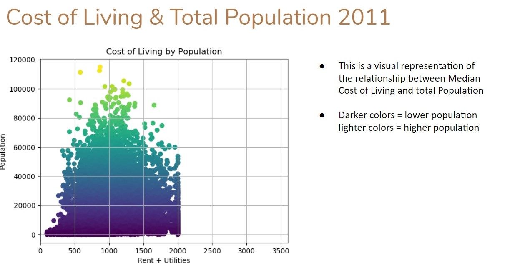
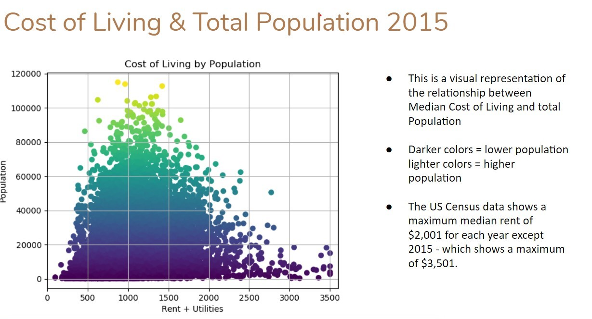
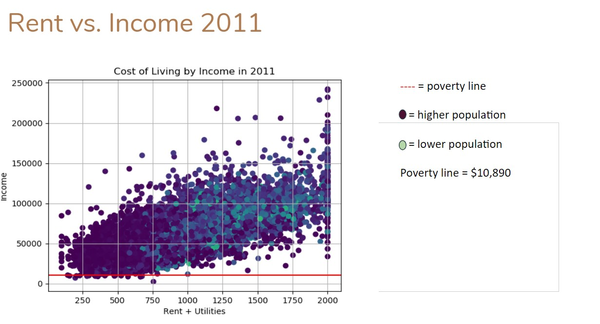
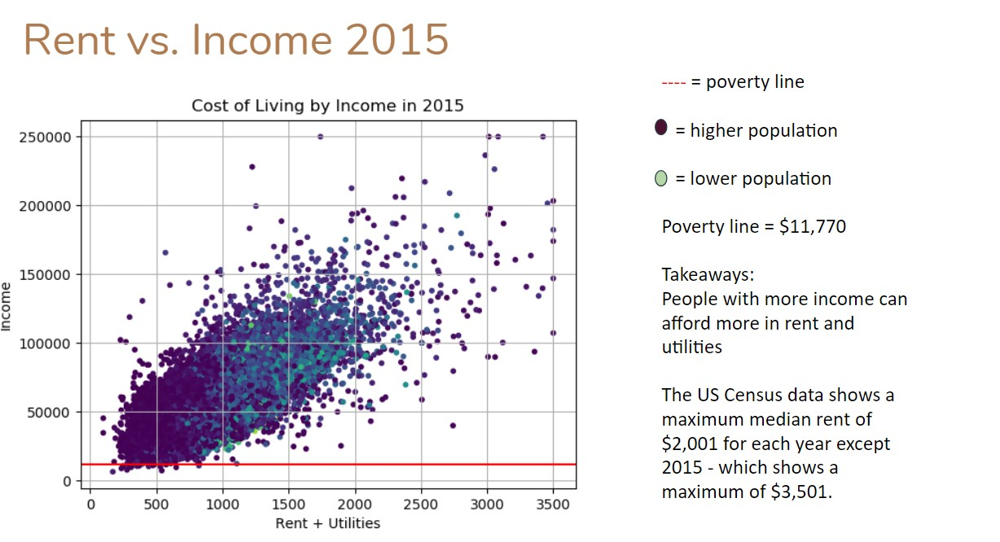
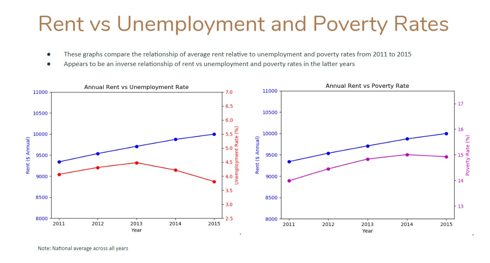
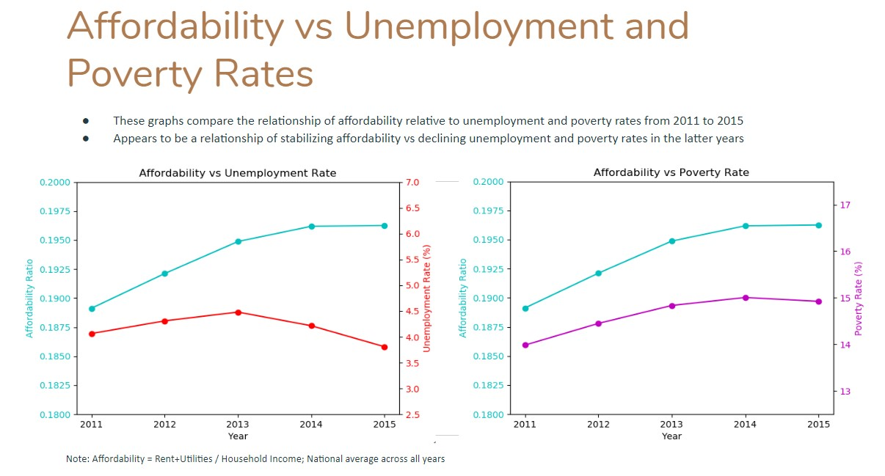
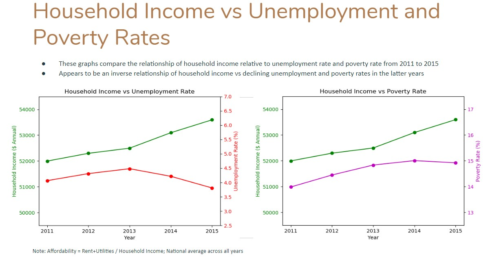
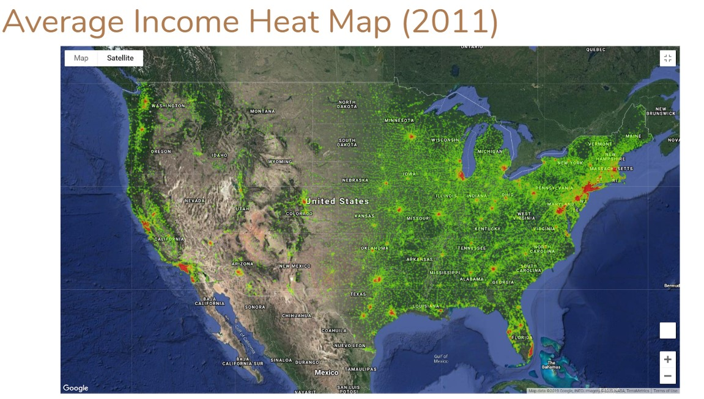
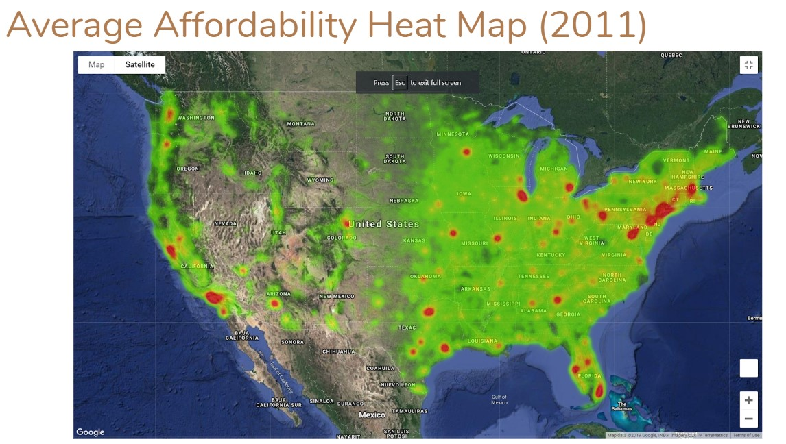

Overview
Living in New York City, the first thing you notice is that apartments are not cheap at all. At first you think that not all 8 million people could possibly afford to live here. This is a thought I have had for a long time now. So, I dove into the U.S. Census data to find out what makes New York so expensive. Once I started looking at the Census data, I started to think more big picture and see what areas in the U.S. are the most and least affordable. I then started to think of ideas of what factors affect the affordability of a city. Some of the first factors that came to mind were population size, median income, location or proximity to major cities, unemployment, and poverty level.
The U.S. Census makes all its data available to the public through an API. The Census API can be a little tricky to get the information you are looking for, so if you want to try it for yourself, I would suggest to closely reading the documentation that can be found on the Census website. The data is not set up in the most friendly format, so cleaning, manipulating, and converting will take a good amount of time and be very frustrating at points. After digging into the data we realized that there was a good amount of missing data points which could possibly lead to some problems down the road. However, this data set is large enough where I did not need to investigate further.
Process
The first factor I looked into was the population compared to the cost of living (rent + utilities). The data I pulled was from 2011 to 2015, and I wanted to see if there was a trend year to year. The first visualization I did was just a scatter plot of this data, but each year looked about the same. The only difference is that from 2011 to 2014, that the cost of living looks it was capped and cuts off at $2,000 a month. In 2015, this data was more accurately collected and shows the actual distribution much better. This can be seen in the scatter plots below. Each data point represents each zip code in the census data.
 The next factor I investigated was the median household income. I made a similar scatter plot to see the comparison of cost of living to the median household income. The same problem occurred with the rent data being cut off for all years prior to 2015. Each data point represents each zip code in the census data.
 From the above scatter plots, it is clear to see that there is a relatively strong correlation between cost of living and household income. This makes sense that in areas where people make more money; the cost of living is higher. This could be that people in those areas are living in nicer homes/apartments or that landlords are charging more because they know people can afford to pay more. That question will have to be answered on another day with more analysis.
The population does not give a very noticeably visualization whether it has an impact on cost of living or not. However, looking at the income scatter plots, it is clear to see that in the bottom right corner of the plot almost all points are a darker color and indicate a higher population. This shows that areas with larger populations are, on average, making less per household.
I continued my analysis to see if the unemployment rate or poverty rate changing affected the cost of living over timeline of the data. Below are some line charts that show possible trends of these factors affecting the cost of rent. The affordability rate is simply calculated by taking the cost of living and dividing by median household income.
  In the years sampled from the above charts, one thing that is obvious is that the unemployment rate has decreased, and income has increased from 2013 onward. The affordability rate has also increased but looks like it is starting to flatten towards 2014 and 2015, meanwhile the cost of living is steadily increasing and shows little signs of flattening. It is difficult to draw the conclusion that income and unemployment have led to the increase in rent. I think more analysis is needed and more data outside of the US Census need to be factored in.
I also created a heat map, using Google Maps API, of household income and affordability rates to see income distribution across the U.S. and to see where it is most affordable to live. This map is also a great visualization to see where you have missing data points or null values in your data. This is the reason for the gaps in the map.
 Conclusion
Major cities seem to have the highest incomes while also being the least affordable places. Further analysis maybe to look at how many people have moved in and out of those in the past decade. Has an influx of people moving out of the suburbs and into the cities caused prices to increase so much? It is definitely something worth looking into.
All Data Source by US Census.